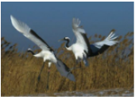

2019年北京市中考生物试题 · 科普阅读 第20题
20. 阅读科普短文，回答问题。
在金黄的芦苇荡，一对丹顶鹤扇动着美丽的翅膀翩翩起舞。丹顶鹤体态优美、行止有节、鹤鸣悠扬，被人们誉为“仙鹤”。丹顶鹤是我国一级保护动物，主要栖息在沼泽、浅滩和芦苇塘等湿地。它的喙、颈和足都很长、能够捕食湿地中的鱼、虾、昆虫和软体动物，也吃植物的根、茎和种子。丹顶鹤春夏季在东北地区繁殖，就地取材筑巢产卵，雌雄轮流孵卵。约一个月后，雏鸟破壳而出，跟随双亲学习觅食、飞翔等生存技能。幼鹤长到一岁左右就离开双亲独立生活。丹项鹤秋冬季节迁徙到温暖的南方越冬。近年来，由于湿地面积大量减少，丹顶鹤的生存受到严重威胁。为保护丹顶鹤，我国不仅建立了多个自然保护区就地保护，而且在动物园、野生动物保护中心等机构迁地保护，进行了相关研究和种群复壮工作。丹顶鹤幼体容易感染血孢子虫。血孢子虫通过蚊虫叮咬传播，在血细胞内快速繁殖，导致个体患病甚至死亡。为了预防该传染病的发生，北京动物园研究人员将一岁以内的丹顶鹤幼体移至防蚊大棚饲养。持续监测发现，采取该预防措施后，幼鹤未检测到血孢子虫感染。该措施已用于幼鹤野外放归前的阶段饲养。目前北京动物园已有6只丹顶鹤成功放归野外。截止2018年，由各地保护机构放归的16只丹顶鹤中，已有9只成功在野外存活，并有多只在野外繁殖了后代。

（1）丹顶鹤属于_______纲(类)动物，其适应栖息环境的形态特征有_______。
（2）保护丹顶鹤的主要措施包括就地保护和_______。
（3）将幼鹤移至防蚊大棚饲养，属于传染病预防措施中的_______。研究人员定期取幼鹤血液制成玻片标本，借助_______观察，监测其是否感染血孢子虫。
（4）野外放归前，研究人员要先对丹顶鹤进行一段时间的野化训练。结合文中信息，你认为需要进行的训练有_______。